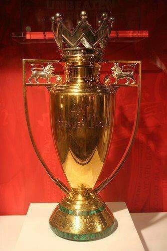
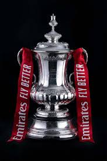
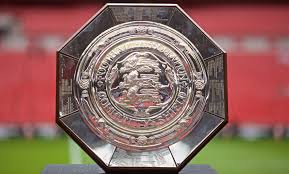
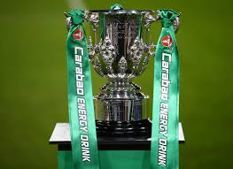
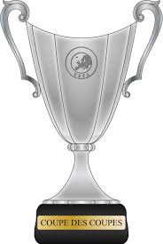
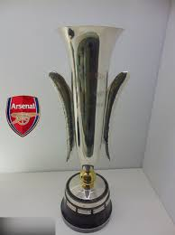

Club History
Arsenal Major Honours
A look at Arsenal’s major competitive trophies, from domestic dominance to European silverware.

🏆 League Titles
14
Includes First Division and Premier League titles. Arsenal are also the only club to have won the English top-flight league title without losing a single game in a season (2003/04). They were subsequently awarded with a golden premier league trophy to commemorate the achievement.
Years: 1930/31, 1932/33, 1933/34, 1934/35, 1937/38, 1947/48, 1952/53, 1970/71, 1988/89, 1990/91, 1997/98, 2001/02, 2003/04, 2025/26

🏆 FA Cup
14
Arsenal are historically one of the most successful clubs in FA Cup history.
Years: 1929/30, 1935/36, 1949/50, 1970/71, 1978/79, 1992/93, 1997/98, 2001/02, 2002/03, 2004/05, 2013/14, 2014/15, 2016/17, 2019/20

🛡️ Community Shield
17
Includes Charity Shield and Community Shield wins.
Years: 1930, 1931, 1933, 1934, 1938, 1948, 1953, 1991, 1998, 1999, 2002, 2004, 2014, 2015, 2017, 2020, 2023

🏆 League Cup / Carabao Cup
2
Arsenal have won the League Cup twice.
Years: 1986/87, 1992/93

🌍 European Cup Winners’ Cup
1
Arsenal won the European Cup Winners’ Cup in 1993/94.
Year: 1993/94

🌍 Inter-Cities Fairs Cup
1
A major European honour won before the modern UEFA Cup/Europa League era.
Year: 1969/70